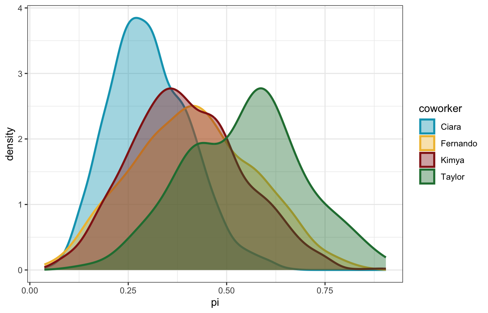
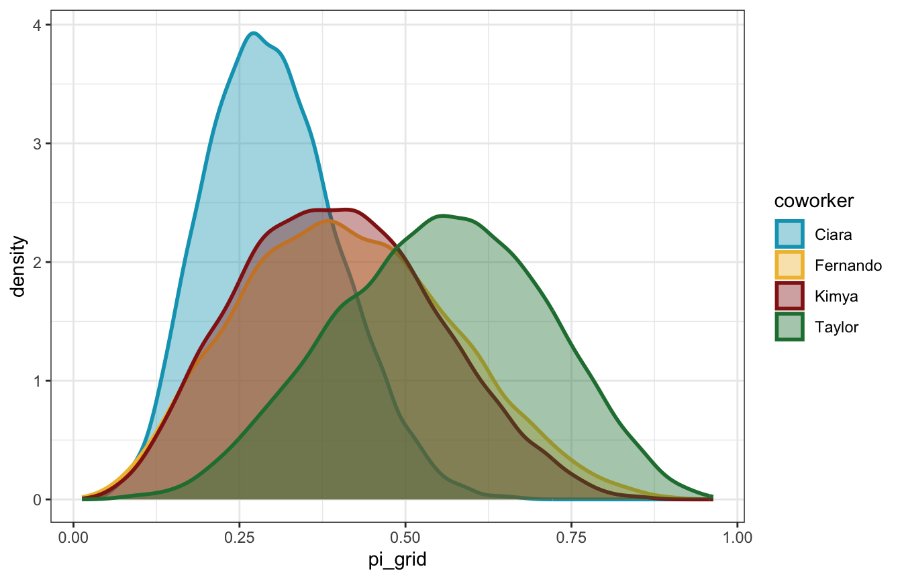

library(bayesrules)
library(tidyverse)
library(brms)
library(tidybayes)
# Plot stuff
clrs <- MetBrewer::met.brewer("Lakota", 6)
theme_set(theme_bw())
# Seed stuff
BAYES_SEED <- 1234
set.seed(1234)Exercises
Balance and sequentiality in Bayesian Analyses
4.9.2
The local ice cream shop is open until it runs out of ice cream for the day. It’s 2 p.m. and Chad wants to pick up an ice cream cone. He asks his coworkers about the chance (π) that the shop is still open. Their Beta priors for π are below:
worker_priors <- tribble(
~coworker, ~prior,
"Kimya", "Beta(1, 2)",
"Fernando", "Beta(0.5, 1)",
"Ciara", "Beta(3, 10)",
"Taylor", "Beta(2, 0.1)"
)
worker_priors %>% knitr::kable()| coworker | prior |
|---|---|
| Kimya | Beta(1, 2) |
| Fernando | Beta(0.5, 1) |
| Ciara | Beta(3, 10) |
| Taylor | Beta(2, 0.1) |
4.4: Choice of prior
Visualize and summarize (in words) each coworker’s prior understanding of Chad’s chances to satisfy his ice cream craving.
worker_prior_densities <- worker_priors %>%
mutate(shapes = str_match_all(prior, "Beta\\((\\d+\\.?\\d*), (\\d+\\.?\\d*)\\)")) %>%
mutate(shape1 = map_dbl(shapes, ~as.numeric(.x[2])),
shape2 = map_dbl(shapes, ~as.numeric(.x[3]))) %>%
mutate(range = list(seq(0, 1, length.out = 1001))) %>%
mutate(density = pmap(list(range, shape1, shape2), ~dbeta(..1, ..2, ..3)))
worker_prior_densities %>%
unnest(c(range, density)) %>%
# Truncate this a little for plotting
filter(range <= 0.99, range >= 0.01) %>%
ggplot(aes(x = range, y = density, fill = coworker, color = coworker)) +
geom_line(size = 1) +
geom_area(position = position_identity(), alpha = 0.4) +
scale_fill_manual(values = clrs[c(1, 2, 3, 5)]) +
scale_color_manual(values = clrs[c(1, 2, 3, 5)])- Kimya is relatively uncertain, but leaning towards believing that π is low
- Fernando puts heavy weight on very low probabilities of π—moreso than Kimya
- Ciara believes that π is clustered around 20%, and no higher than 50%
- Taylor is the most optimistic, believing that π is exceptionally high (like 90+%)
4.5 & 4.6: Simulating and identifying the posterior
Chad peruses the shop’s website. On 3 of the past 7 days, they were still open at 2 p.m.. Complete the following for each of Chad’s coworkers:
- simulate their posterior model;
- create a histogram for the simulated posterior; and
- use the simulation to approximate the posterior mean value of π
and
Complete the following for each of Chad’s coworkers:
- identify the exact posterior model of π;
- calculate the exact posterior mean of π; and
- compare these to the simulation results in the previous exercise.
Ciara only
\[ \begin{aligned} (Y = 3) \mid \pi &= \operatorname{Binomial}(7, \pi) \\ \pi &\sim \operatorname{Beta}(3, 10) \end{aligned} \]
The Bayes Rules simulation approach is to simulate all the possibly likelihoods (here 0–7 / 7) and then filter to just choose one (3)
pi_ciara <- tibble(pi = rbeta(10000, 3, 10)) %>%
mutate(y = rbinom(10000, size = 7, prob = pi))
ggplot(pi_ciara, aes(x = pi, y = y)) +
geom_point(aes(color = (y == 3)))pi_ciara %>%
filter(y == 3) %>%
summarize(across(pi, lst(mean, median)))
## # A tibble: 1 × 2
## pi_mean pi_median
## <dbl> <dbl>
## 1 0.302 0.296
pi_ciara %>%
filter(y == 3) %>%
ggplot(aes(x = pi)) +
geom_density()pi_grid <- tibble(pi_grid = seq(0, 1, length.out = 1001)) %>%
mutate(prior_beta = dbeta(pi_grid, 3, 10)) %>%
mutate(likelihood = dbinom(3, size = 7, prob = pi_grid)) %>%
mutate(posterior = (likelihood * prior_beta) / sum(likelihood * prior_beta))
pi_samples <- pi_grid %>%
slice_sample(n = 10000, weight_by = posterior, replace = TRUE)
pi_samples %>%
summarize(across(pi_grid, lst(mean, median)))
## # A tibble: 1 × 2
## pi_grid_mean pi_grid_median
## <dbl> <dbl>
## 1 0.301 0.295
ggplot(pi_samples, aes(x = pi_grid)) +
geom_density()model_pi <- brm(
bf(days_open | trials(weekdays) ~ 0 + Intercept),
data = list(days_open = 3, weekdays = 7),
family = binomial(link = "identity"),
prior(beta(3, 10), class = b, lb = 0, ub = 1),
iter = 5000, warmup = 1000, seed = BAYES_SEED,
backend = "rstan", cores = 4
)
## Compiling Stan program...
## Start samplingmodel_pi %>%
spread_draws(b_Intercept) %>%
summarize(across(b_Intercept, lst(mean, median, hdci = ~median_hdci(., width = 0.89)))) %>%
unnest(b_Intercept_hdci)
## # A tibble: 1 × 8
## b_Intercept_mean b_Intercept_median y ymin ymax .width .point .interval
## <dbl> <dbl> <dbl> <dbl> <dbl> <dbl> <chr> <chr>
## 1 0.298 0.292 0.292 0.110 0.493 0.95 median hdcimodel_pi %>%
gather_draws(b_Intercept) %>%
ggplot(aes(x = .value)) +
geom_density(aes(fill = "Posterior"), color = NA, alpha = 0.75) +
stat_function(geom = "area", fun = ~dbeta(., 3, 10), aes(fill = "Beta(3, 10) prior"), alpha = 0.75) +
scale_fill_manual(values = clrs[5:6]) +
xlim(c(0, 1))pi_stan.stan:
// Things coming in from R
data {
int<lower=0> total_days; // Possible days open (corresponds to binomial trials)
int<lower=0> days_open; // Outcome variable
}
// Things to estimate
parameters {
real<lower=0, upper=1> pi; // Probability the store is open
}
// Models and distributions
model {
// Prior
pi ~ beta(3, 10);
// Likelihood
days_open ~ binomial(total_days, pi);
// Internally, these ~ formulas really look like this:
// target += beta_lpdf(pi | 3, 10);
// target += binomial_lpmf(days_open | total_days, pi);
// The ~ notation is a lot nicer and maps onto the notation more directly
}model_stan <- rstan::sampling(
pi_stan,
data = list(days_open = 3, total_days = 7),
iter = 5000, warmup = 1000, seed = BAYES_SEED, chains = 4
)model_stan %>%
spread_draws(pi) %>%
summarize(across(pi, lst(mean, median)))
## # A tibble: 1 × 2
## pi_mean pi_median
## <dbl> <dbl>
## 1 0.298 0.292model_stan %>%
spread_draws(pi) %>%
ggplot(aes(x = pi)) +
stat_halfeye()From equation 3.10 in Bayes Rules!:
\[ \begin{aligned} \pi \mid (Y = y) &\sim \operatorname{Beta}(\alpha + y, \quad \beta + n - y) \\ \pi \mid (Y = 3) &\sim \operatorname{Beta}(3 + 3, \quad 10 + 7 - 3) \\ &\sim \operatorname{Beta}(6, 14) \end{aligned} \]
ggplot() +
geom_function(fun = ~dbeta(., 6, 14))And from equation 3.11 in Bayes Rules!:
\[ \begin{aligned} E(\pi \mid Y = y) &= \frac{\alpha + y}{\alpha + \beta + n} \\ E(\pi \mid Y = 3) &= \frac{3 + 3}{3 + 10 + 7} \\ &= \frac{6}{20} = 0.3 \\ \end{aligned} \]
\[ \begin{aligned} \operatorname{Mode}(\pi \mid Y = y) &= \frac{\alpha + y - 1}{\alpha + \beta + n - 2} \\ \operatorname{Mode}(\pi \mid Y = 3) &= \frac{3 + 3 - 1}{3 + 10 + 7 - 2} \\ &= \frac{5}{18} = 0.27\bar{7} \\ \end{aligned} \]
\[ \begin{aligned} \operatorname{Var}(\pi \mid Y = y) &= \frac{(\alpha + y)~(\beta + n - y)}{(\alpha + \beta + n)^2~(\alpha + \beta + n + 1)} \\ \operatorname{Var}(\pi \mid Y = 3) &= \frac{(3 + 3)~(10 + 7 - 3)}{(3 + 10 + 7)^2~(3 + 10 + 7 + 1)} \\ &= \frac{6 \times 14}{20^2 \times 21} = \frac{84}{8,400} = 0.01 \\ \operatorname{SD}(\pi \mid Y = 3) &= \sqrt{0.01} = 0.1 \end{aligned} \]
Verify using summarize_beta_binomial():
summarize_beta_binomial(alpha = 3, beta = 10, y = 3, n = 7)
## model alpha beta mean mode var sd
## 1 prior 3 10 0.2307692 0.1818182 0.01267963 0.1126039
## 2 posterior 6 14 0.3000000 0.2777778 0.01000000 0.1000000All four coworkers
(sans raw Stan; brms is fine and great for this anyway)
# Clean this table of coworkers up a bit
priors_clean <- worker_prior_densities %>%
select(coworker, prior, shape1, shape2)
priors_clean %>%
knitr::kable()| coworker | prior | shape1 | shape2 |
|---|---|---|---|
| Kimya | Beta(1, 2) | 1.0 | 2.0 |
| Fernando | Beta(0.5, 1) | 0.5 | 1.0 |
| Ciara | Beta(3, 10) | 3.0 | 10.0 |
| Taylor | Beta(2, 0.1) | 2.0 | 0.1 |
br_simulation_pi <- priors_clean %>%
mutate(pi_sim = map2(shape1, shape2, ~{
tibble(pi = rbeta(10000, .x, .y)) %>%
mutate(y = rbinom(10000, size = 7, prob = pi))
}))
br_simulation_pi %>%
unnest(pi_sim) %>%
ggplot(aes(x = pi, y = y)) +
geom_point(aes(color = (y == 3))) +
facet_wrap(vars(coworker))br_simulation_pi %>%
unnest(pi_sim) %>%
filter(y == 3) %>%
group_by(coworker) %>%
summarize(across(pi, lst(mean, median)))
## # A tibble: 4 × 3
## coworker pi_mean pi_median
## <chr> <dbl> <dbl>
## 1 Ciara 0.300 0.291
## 2 Fernando 0.419 0.413
## 3 Kimya 0.401 0.397
## 4 Taylor 0.549 0.550
br_simulation_pi %>%
unnest(pi_sim) %>%
filter(y == 3) %>%
ggplot(aes(x = pi, fill = coworker, color = coworker)) +
geom_density(size = 1, alpha = 0.4) +
scale_fill_manual(values = clrs[c(1, 2, 3, 5)]) +
scale_color_manual(values = clrs[c(1, 2, 3, 5)])
Cool cool. Fernando and Kimya’s flatter priors end up leading to posteriors of ≈40%. Taylor’s extreme optimism leads to a posterior mean of 57%! Ciara’s more reasonable range leads to a posterior of 30%.
grid_simulation_pi <- priors_clean %>%
mutate(pi_grid = list(seq(0.01, 0.99, length.out = 1001))) %>%
mutate(prior_beta = pmap(list(pi_grid, shape1, shape2), ~{
dbeta(..1, ..2, ..3)
})) %>%
mutate(likelihood = map(pi_grid, ~{
dbinom(3, size = 7, prob = .x)
})) %>%
mutate(posterior = map2(prior_beta, likelihood, ~{
(.y * .x) / sum(.y * .x)
}))
grid_simulation_samples <- grid_simulation_pi %>%
unnest(c(pi_grid, posterior)) %>%
group_by(coworker) %>%
slice_sample(n = 10000, weight_by = posterior, replace = TRUE)
grid_simulation_samples %>%
group_by(coworker) %>%
summarize(across(pi_grid, lst(mean, median)))
## # A tibble: 4 × 3
## coworker pi_grid_mean pi_grid_median
## <chr> <dbl> <dbl>
## 1 Ciara 0.300 0.294
## 2 Fernando 0.412 0.404
## 3 Kimya 0.399 0.393
## 4 Taylor 0.550 0.556
grid_simulation_samples %>%
ggplot(aes(x = pi_grid, fill = coworker, color = coworker)) +
geom_density(size = 1, alpha = 0.4) +
scale_fill_manual(values = clrs[c(1, 2, 3, 5)]) +
scale_color_manual(values = clrs[c(1, 2, 3, 5)])
brms_pi <- priors_clean %>%
mutate(stan_prior = map2(shape1, shape2, ~{
prior_string(glue::glue("beta({.x}, {.y})"), class = "b", lb = 0, ub = 1)
})) %>%
mutate(model = map(stan_prior, ~{
brm(
bf(days_open | trials(weekdays) ~ 0 + Intercept),
data = list(days_open = 3, weekdays = 7),
family = binomial(link = "identity"),
prior = .x,
iter = 5000, warmup = 1000, seed = BAYES_SEED,
backend = "rstan", cores = 4
)
}))
## Compiling Stan program...
## Start sampling
## Compiling Stan program...
## Start sampling
## Compiling Stan program...
## Start sampling
## Compiling Stan program...
## Start samplingbrms_pi %>%
mutate(draws = map(model, ~spread_draws(., b_Intercept))) %>%
unnest(draws) %>%
group_by(coworker) %>%
summarize(across(b_Intercept, lst(mean, median, hdci = ~median_hdci(., width = 0.89)))) %>%
unnest(b_Intercept_hdci)
## # A tibble: 4 × 9
## coworker b_Intercept_mean b_Intercep…¹ y ymin ymax .width .point .inte…²
## <chr> <dbl> <dbl> <dbl> <dbl> <dbl> <dbl> <chr> <chr>
## 1 Ciara 0.298 0.292 0.292 0.110 0.493 0.95 median hdci
## 2 Fernando 0.411 0.403 0.403 0.125 0.726 0.95 median hdci
## 3 Kimya 0.399 0.392 0.392 0.130 0.693 0.95 median hdci
## 4 Taylor 0.547 0.552 0.552 0.258 0.850 0.95 median hdci
## # … with abbreviated variable names ¹b_Intercept_median, ².intervalbrms_pi %>%
mutate(draws = map(model, ~gather_draws(., b_Intercept))) %>%
unnest(draws) %>%
ggplot(aes(x = .value, fill = coworker)) +
stat_halfeye(alpha = 0.4) +
scale_fill_manual(values = clrs[c(1, 2, 3, 5)])lik_y <- 3
lik_n <- 7
posteriors_manual <- priors_clean %>%
mutate(posterior_shape1 = shape1 + lik_y,
posterior_shape2 = shape2 + lik_n - lik_y)
posteriors_manual %>%
mutate(posterior = glue::glue("Beta({posterior_shape1}, {posterior_shape2})")) %>%
select(coworker, prior, posterior) %>%
knitr::kable()| coworker | prior | posterior |
|---|---|---|
| Kimya | Beta(1, 2) | Beta(4, 6) |
| Fernando | Beta(0.5, 1) | Beta(3.5, 5) |
| Ciara | Beta(3, 10) | Beta(6, 14) |
| Taylor | Beta(2, 0.1) | Beta(5, 4.1) |
posteriors_manual_plot <- posteriors_manual %>%
mutate(range = list(seq(0.01, 0.99, length.out = 1001))) %>%
mutate(density = pmap(list(range, posterior_shape1, posterior_shape2), ~dbeta(..1, ..2, ..3)))
posteriors_manual_plot %>%
unnest(c(range, density)) %>%
ggplot(aes(x = range, y = density, fill = coworker, color = coworker)) +
geom_line(size = 1) +
geom_area(position = position_identity(), alpha = 0.4) +
scale_fill_manual(values = clrs[c(1, 2, 3, 5)]) +
scale_color_manual(values = clrs[c(1, 2, 3, 5)])posteriors_manual_summary <- posteriors_manual %>%
group_by(coworker) %>%
summarize(summary = map2(shape1, shape2, ~{
summarize_beta_binomial(alpha = .x, beta = .y, y = lik_y, n = lik_n)
})) %>%
unnest(summary)
posteriors_manual_summary %>%
select(-coworker) %>%
kableExtra::kbl(digits = 3) %>%
kableExtra::pack_rows(index = table(posteriors_manual_summary$coworker)) %>%
kableExtra::kable_styling()| model | alpha | beta | mean | mode | var | sd |
|---|---|---|---|---|---|---|
| Ciara | ||||||
| prior | 3.0 | 10.0 | 0.231 | 0.182 | 0.013 | 0.113 |
| posterior | 6.0 | 14.0 | 0.300 | 0.278 | 0.010 | 0.100 |
| Fernando | ||||||
| prior | 0.5 | 1.0 | 0.333 | 1.000 | 0.089 | 0.298 |
| posterior | 3.5 | 5.0 | 0.412 | 0.385 | 0.025 | 0.160 |
| Kimya | ||||||
| prior | 1.0 | 2.0 | 0.333 | 0.000 | 0.056 | 0.236 |
| posterior | 4.0 | 6.0 | 0.400 | 0.375 | 0.022 | 0.148 |
| Taylor | ||||||
| prior | 2.0 | 0.1 | 0.952 | 1.000 | 0.015 | 0.121 |
| posterior | 5.0 | 4.1 | 0.549 | 0.563 | 0.025 | 0.157 |